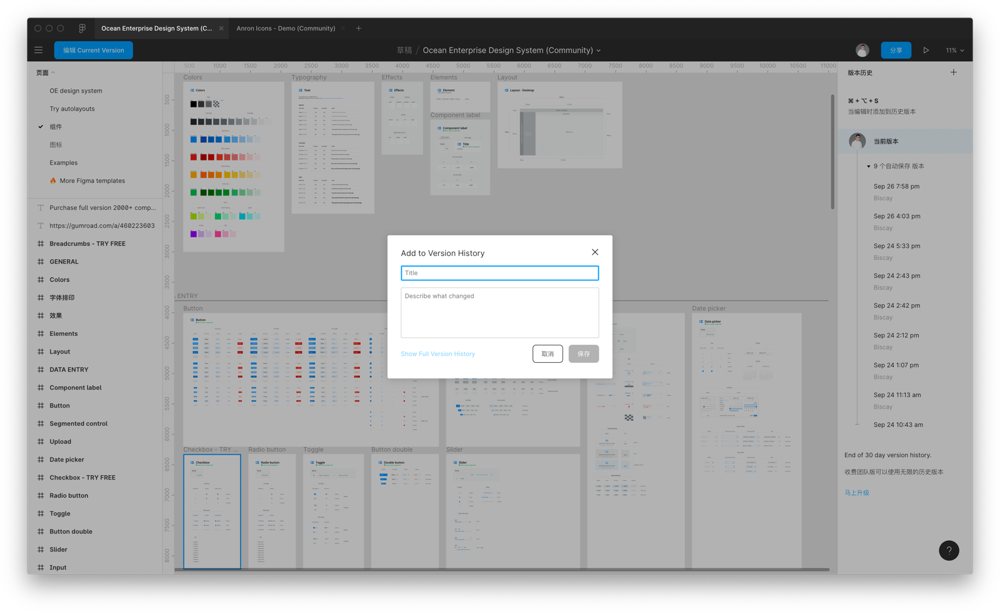
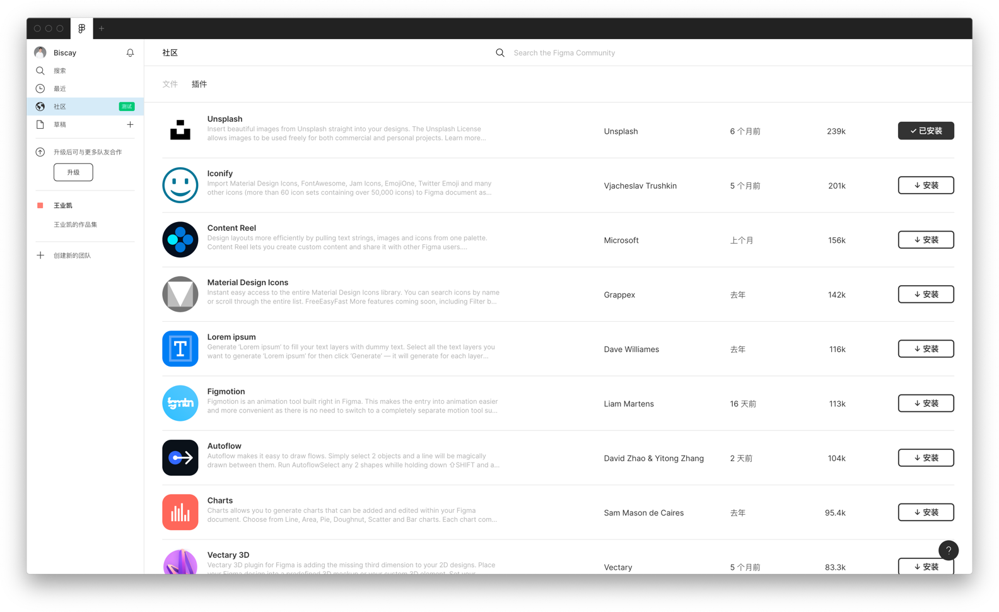
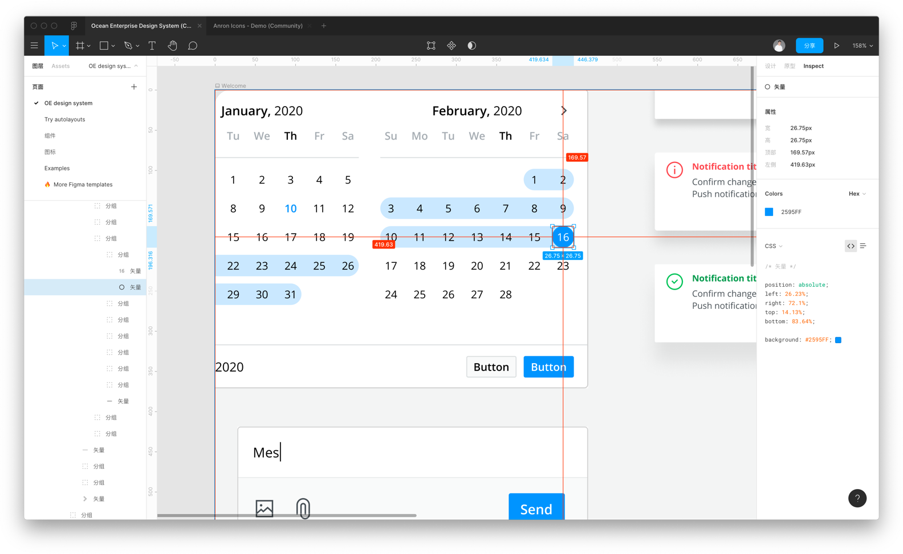
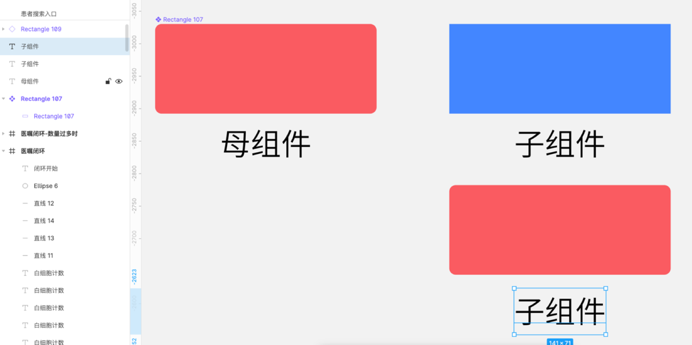
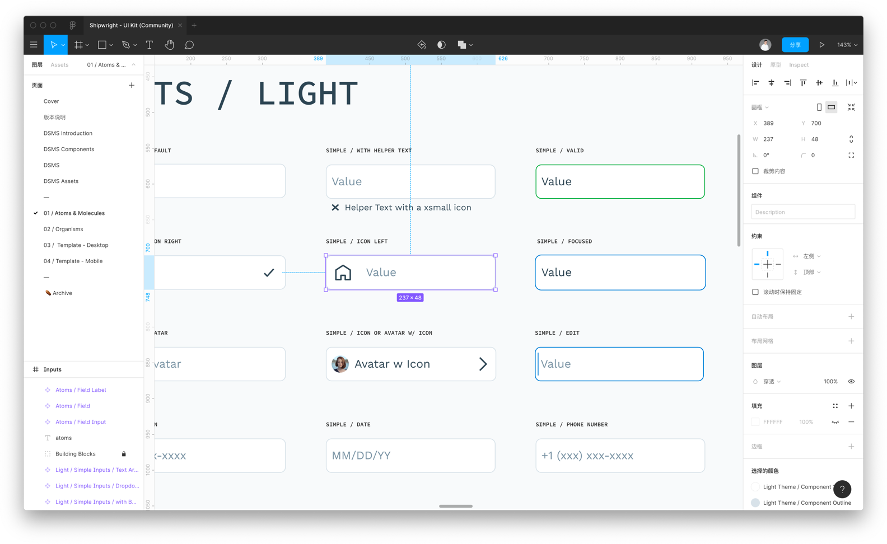
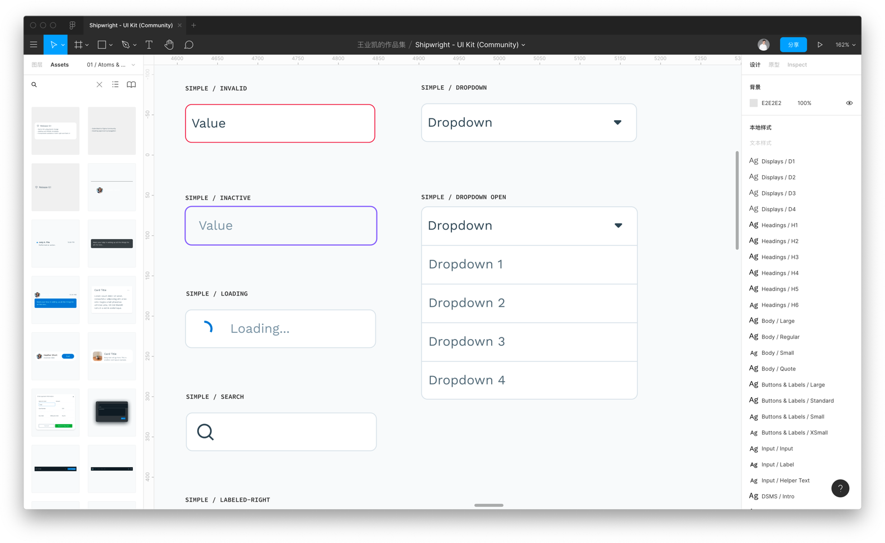

▍Figma 的 Frame 概念
Frame 可以理解为画板，字面意思是框架；这在 Sketch 里从来没有的概念，而且和 Sketch 的画板也不是一个东西，在现在新兴的设计软件：Framer X、Figma 中是都有
Frame 概念的；
• 这个 Frame 是可以被嵌套的：
• Frame 套 Frame
• Frame 变成组件（Component）
• 元素拖入 Frame 里时，图层关系会被自动归属于 Frame 下，可以理解为 自动编组，但比这个强大的多
自动编组的特性：
在正确理解 Frame 概念之后，他的自动编组也会迫使我对图层逻辑保持清晰，本来做 UI 就需要对开发的逻辑、对自己图层的逻辑有清晰结构，所以在设计过程中应该保持自己的图层结构清晰，这时搭配 Frame 真的是美滋滋（话说图层结构清晰也是 UI 设计师的自我修养不是么？）
约束对齐布局：
Sketch 中都有一个左对齐右对齐的布局设置，Figma 当然也有，但这个功能只能在 Frame 框架内使用，也就是说如果 2 个形状编组之后是不能设置布局；这一点其实挺好的，又一次督促我使用 Frame
来理清项目的图层逻辑，仔细想想，图层和框架本来就是 2 个概念。
基于以上 2 点，善于用 Frame 的概念去做 UI，有一种神清气爽的感觉，认真想一些，其实在 Sketch 里的图层是随便怼的，乱糟糟，图层、编组之间的感觉一种非常混乱的感觉，而 Figma 就是清晰准确的感觉。
▍布局
Figma 的布局是比 Sketch 更高级、更好用的：
• 除了基本的上下左右
• Figma 还有 Center 居中对齐
• Figma 还有 Scale 比例缩放
▍组件库和设计稿分离
Figma 有团队功能，可以推送共用的组件库，可以理解为 Sketch 的 Library，但 Figma 的更稳定快速，说实话 Sketch 的 Library 我确实没研究过，但是 Figma的这个让我觉得非常好用，真正做到组件库单独更新，然后推送给同事
▍方便实用的历史版本控制
当设计完一个版本的时候可以保存一个版本，而且设计的时候，figma会自动保存，在保存的大版本的位置下拉还有更多的时间点的小版本，可以把需要的时间点版本复制出来，相对于sketch的本地保存，figma的云端保存就方便很多了，不会因为硬件的损坏而丢失，永远可以存在网上。
▍丰富的插件环境
Figma有很多的插件，可以看到figma的插件排行，还可以查看最新上线的Figma插件，因为figma是基于网页端的设计，所以它不像sketch经常要更新版本，所以下载插件后就可以开开心心的使用，而且不用担心版本更新后插件不能使用的问题。
▍设计稿标注
Figma可以直接生成代码，可以生成css、安卓、ios三种代码，还可以切换展示形式，只要把链接发给开发，开发就可以直接使用了，开发还可以通过发出去的链接来进行切图，只要选中图标就可以导出各种开发所需要的格式，从此跟蓝湖摩客说byebye~
▍云同步
Figma可以在云端保存，之前用sketch的时候，每次回家都得把文件从公司电脑复制到自己的Macbook上，带到家里，第二天又得从笔记本上拷贝到公司的电脑上，特别麻烦。有了Figma，所有的设计稿都可以在云端保存、存储，就不用把文件传来传去了。~
▍秒杀Sketch的组件功能
从组建的嵌套来看，Figma中的component复制后产生新的Instances，比symbol强大的地方在于，存在母子级的关系。相当于可以调整一个实例样式，但又不会干扰到母组件的样式，而修改母组建的样式又能修改全局。（已修改样式的子组件，该样式不受母组件干扰）
另外比较好用的一点就是figma生成的组件可以和用该组件的设计稿在同一个页面，修改了组件后，设计稿同时可以看到，不像sketch，修改了组件之后要跳转页面才能看到（sketch修改组件需要进入单独的组件页面）
还有比较好用的一点就是figma生成的组件，可以在左侧直接展示，只要直接拖动就可以了，如果是相同一级的子组件，还可以直接拖动替换。
▍总结
一场突如其来的疫情极大改变了人们生活和工作的方式，许多公司开始尝试远程办公，远程协作成为了摆在台面上的刚性需求。相信随着5G的到来，类似Figma这种云端编辑和设计将成为主流。
目前我也是一边用一边学习这个软件，软件是一个工具，我们的目的是通过这个这个功能实现更加轻松高效的设计。
来自知乎「如何评价多人合作界面设计工具 Figma？」
来自人人都是产品经理「因远程协作大火的Figma，会取代Sketch的地位吗？」